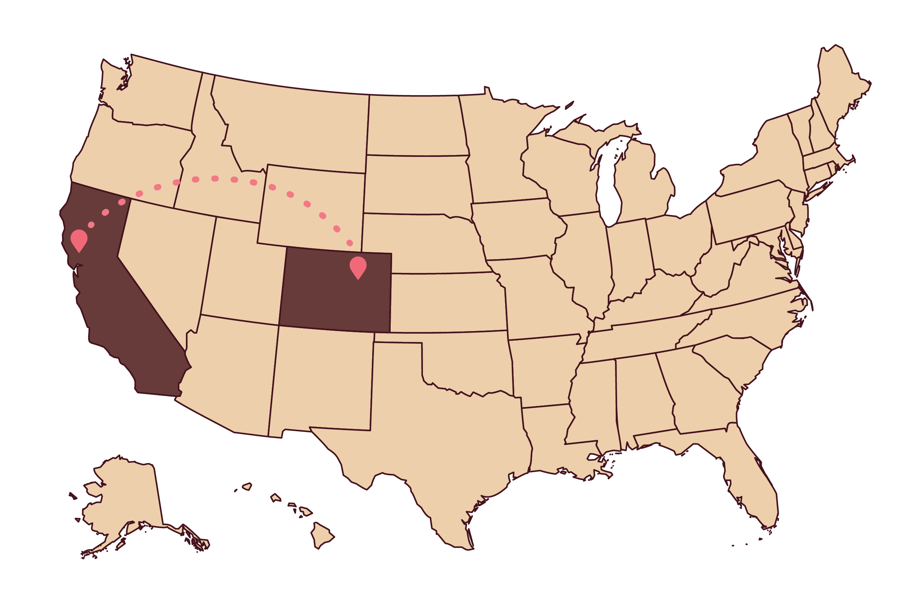
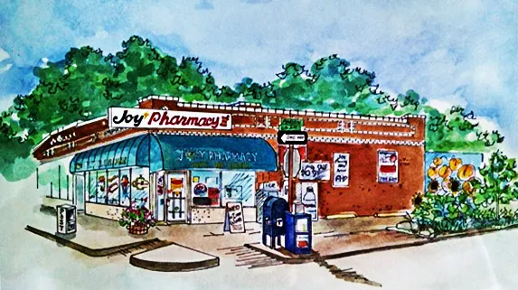
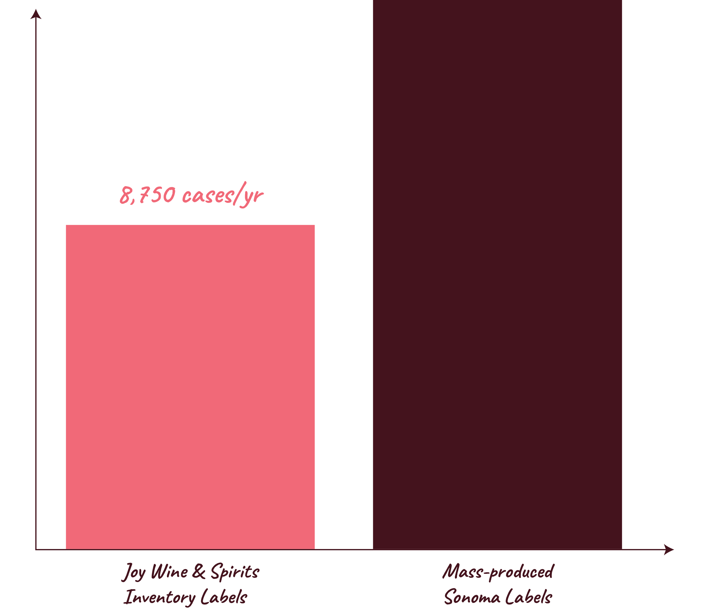
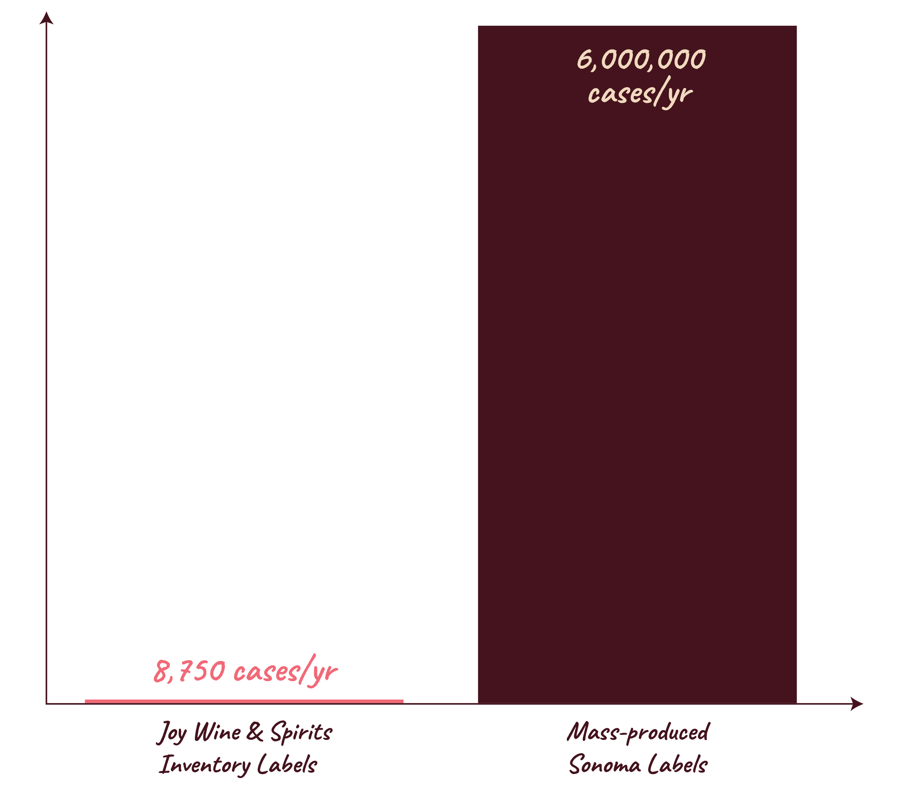

Recently, I packed up my life and moved halfway across the country. From Sonoma, CA to Denver, CO.
Moving to Denver was supposed to be a “homecoming” and I was looking forward to the exhale I would let out upon acclimating to my life here. That hasn’t quite come, instead I’ve found myself feeling untethered.

Map illustrating a move from Sonoma, CA, USA to Denver, CO, USA.

As a pick-me-up, my husband and I walked the blocks of Denver’s historic Cheeseman Park neighborhood and found ourselves in a nearby wine bottle shop.
While there are 221 Liquor stores in Denver, CO.
There are just three are within a 15 minute walk from my house.
One of these is Joy Wine & Spirits, a hand-curated wine store that has become an anchor to my former self, at a time when I've yearned to feel grounded.
They have a wall dedicated to West Coast labels.
With a great selection of wine from Sonoma Valley, specifically.
About 11 percent of their West Coast wine wall is from Sonoma County.
To put this into perspective, Sonoma, CA represents 5 percent of the wine coming out of the West Coast of the United States.
Joy Wines has more than 2x the representation.
It's more than the Sonoma Coast representation that makes the inventory at Joy stand out.
I could get wine from Sonoma anywhere. However, its unlikely that said wine would be from Bloodroot, a small-scale winery in Healdsburg, the town my husband and I spent my birthday last year.
Joy doesn't just carry wine from the Sonoma Coast. They carry a specific selection of wines from small-production wine labels. The median number of cases produced annually among the labels Joy Wines carries is 8,750.

Joy Wine & Spirits Sonoma Inventory's annual case production.
By contrast, Jackson Family wines, a high-production Sonoma County wine that represents what you could find anywhere, produces upwards of 6 million cases annually.

Joy Wine & Spirits Inventory's annual case production vs. that of mass-produced Sonoma labels.
What are the odds that I ended up living a 6-minute walk from a wine shop that has such a large inventory of local sonoma wine?
At a moment when I was looking for connection, stumbling on labels I recognized from small-scale wineries I'd visited grounded me to my life in Sonoma. It also grounded me in my new life in Denver.
I have “my wine place” now. My husband and I go about once a week. I can finally exhale.